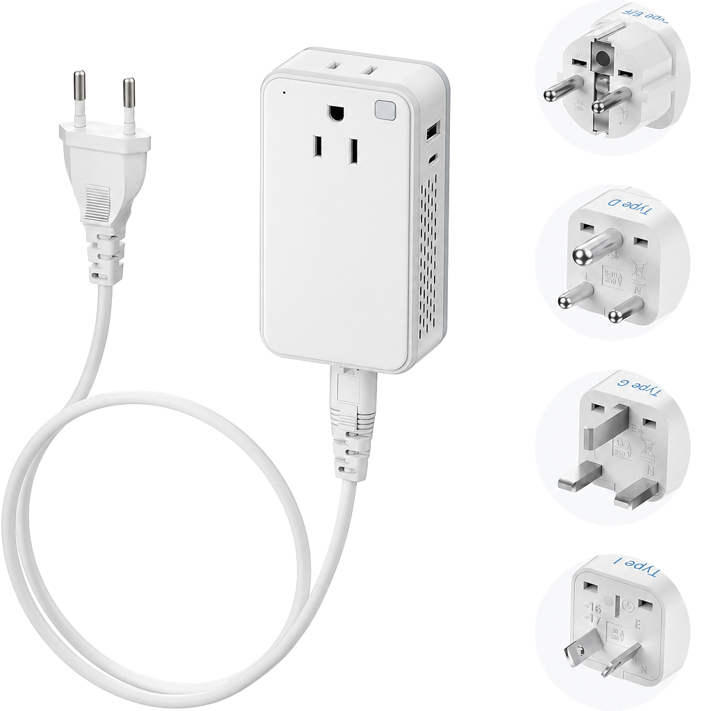
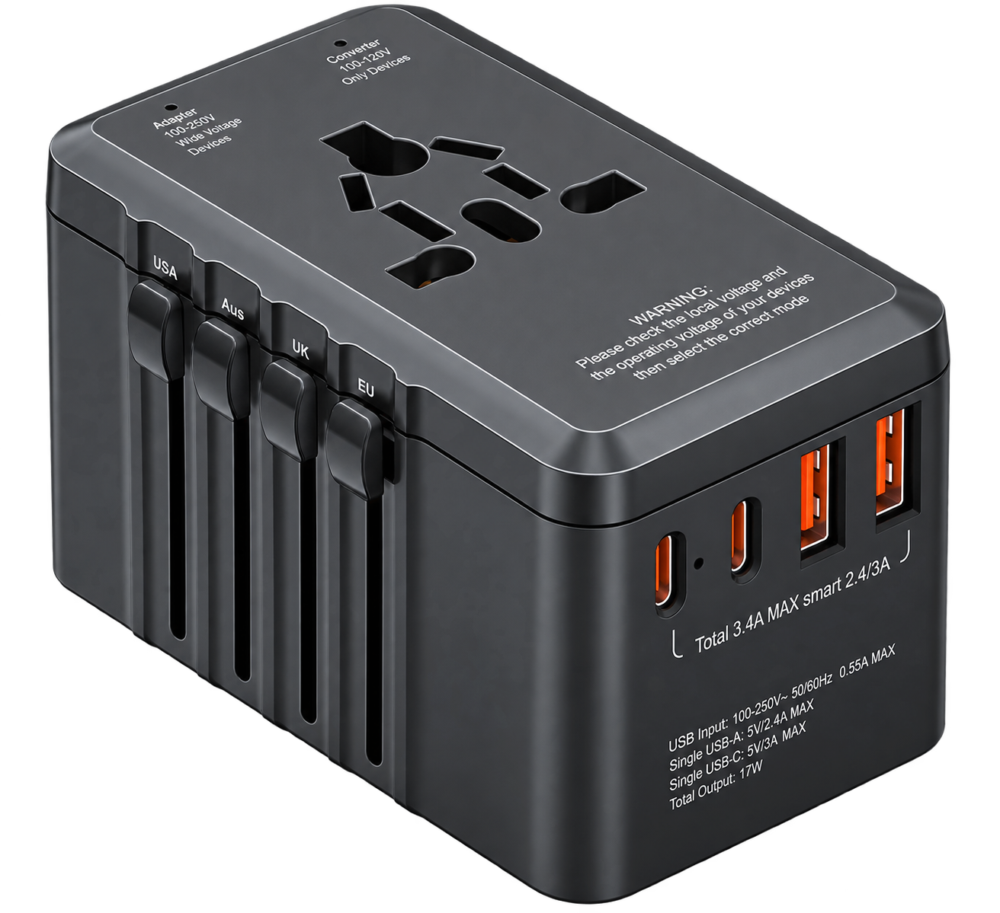
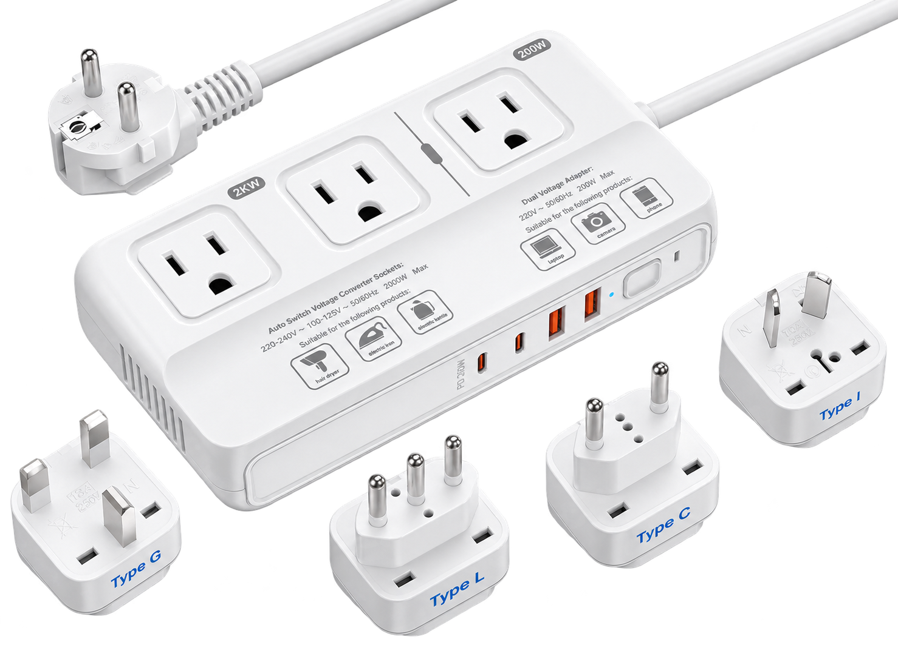
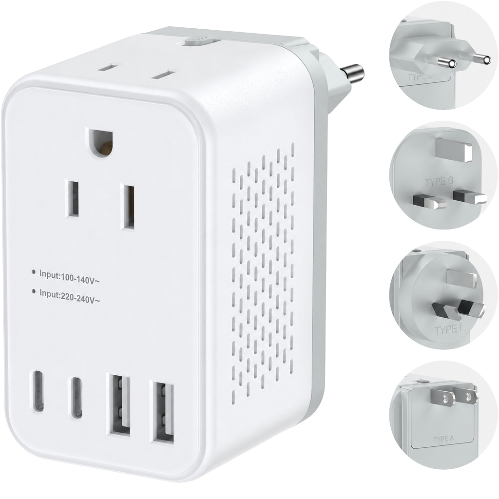
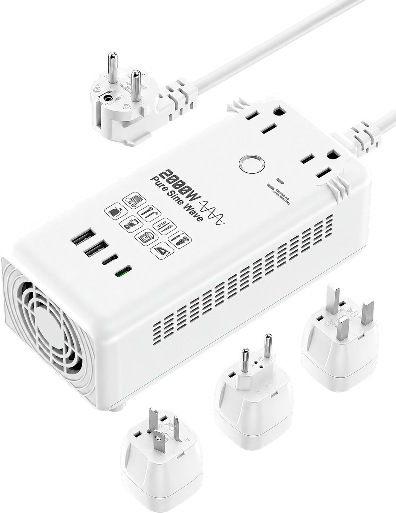
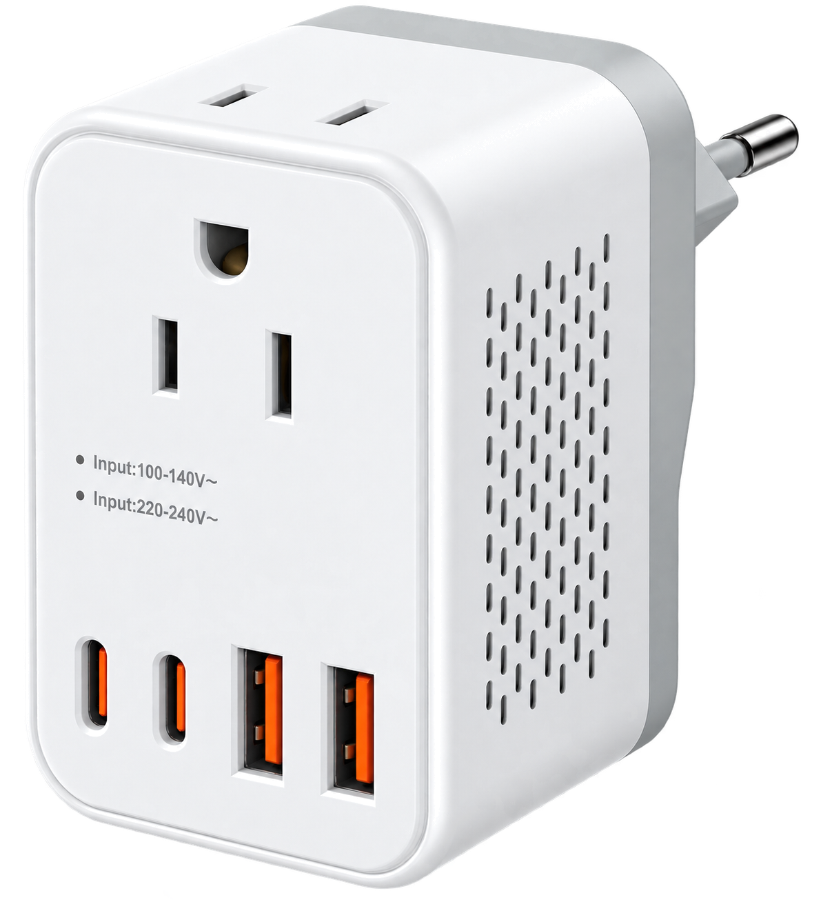

US-READY · SLIM CONVERTER
TUS-9
Compact step-down strip for travel applications.
200W · 220V to 100V · 17W USBUS-compatible plug options
View TUS-9Seven voltage converter platforms from 200W to 2000W, including pure sine wave, strip and interchangeable-plug formats.

Compact step-down strip for travel applications.

High-power multi-function step-down converter.

High-power step-down converter strip.

Interchangeable-plug step-down converter.

Compact pure sine wave voltage converter.

High-power pure sine wave voltage converter.
